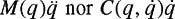

|
| |||||||||||||
|
|
||
Let's take a closer look at equations (10.5) and (10.6), since they display much of the interesting structure of many second-order mechanical systems. On the right-hand side of each equation, there is a term depending on the second derivatives of the configuration variables, a term quadratic in the first derivatives of the configuration variables, and a term depending only on the configuration variables. These terms can be collected to write the dynamics in the following standard form:
where is a vector of velocity product terms with the  matrix linear in is a vector of gravitational forces, and M(q) is an symmetric, positive definite mass or inertia matrix.A matrix M is symmetric if Mij = Mji, where Mij is the entry in the ith row and jth column of M. A matrix M is positive definite if vT Mv > 0 holds for any nonzero vector v. This is true if the determinant and trace (the sum of diagonal elements) of M are positive.
matrix linear in is a vector of gravitational forces, and M(q) is an symmetric, positive definite mass or inertia matrix.A matrix M is symmetric if Mij = Mji, where Mij is the entry in the ith row and jth column of M. A matrix M is positive definite if vT Mv > 0 holds for any nonzero vector v. This is true if the determinant and trace (the sum of diagonal elements) of M are positive.
Equations (10.5) and (10.6) for the RP manipulator can be written in the standard form of equation (10.7), where
The standard form (10.7) is compact, but the term masks the fact that these velocity product terms can be derived from the inertia matrix M(q). If we consider the individual components of this vector, , we find that
where
| (10.9) |
|
The  scalars Γijk (q) are known as the Christoffel symbols of the inertia matrix M(q). In equation (10.8), squared velocity terms (where j = k) are known as centrifugal terms, and velocity product terms where j ≠ k are known as Coriolis terms. For example, the centrifugal term in the RP arm of example 10.1.2 indicates that the linear actuator at the prismatic joint must apply a force to keep the joint stationary as the revolute joint rotates. The Coriolis term indicates that the actuator at the revolute joint must apply a torque for the two joints to move at constant velocities. This is because the inertia of the robot about the first joint is changing as the second joint extends or retracts, so the angular momentum is also changing, implying a torque at the first joint.
scalars Γijk (q) are known as the Christoffel symbols of the inertia matrix M(q). In equation (10.8), squared velocity terms (where j = k) are known as centrifugal terms, and velocity product terms where j ≠ k are known as Coriolis terms. For example, the centrifugal term in the RP arm of example 10.1.2 indicates that the linear actuator at the prismatic joint must apply a force to keep the joint stationary as the revolute joint rotates. The Coriolis term indicates that the actuator at the revolute joint must apply a torque for the two joints to move at constant velocities. This is because the inertia of the robot about the first joint is changing as the second joint extends or retracts, so the angular momentum is also changing, implying a torque at the first joint.
Although there are many ways to write the Coriolis matrix as a function of the Christoffel symbols, one common choice is
Velocity product terms arise due to the noninertial reference frames implicit in the generalized coordinates q. The unforced motions (when u − g(q) = 0) are not "straight lines" in this choice of coordinates, and the Christoffel symbols carry geometric information on how unforced motions "bend" in this choice of coordinates. For example, if we represent the configuration of a point mass m in the plane by standard Cartesian (x, y) coordinates, unforced motions are straight lines in these inertial coordinates, and the Christoffel symbols are zero. If we represent the configuration by polar coordinates [q1, q2]T = [r, θ]T, however, unforced motions are not straight lines in this choice of coordinates, and we find Γ122 = −mq1, Γ212 = Γ221 = mq1 (see problem 1). The geometry of the dynamics of mechanical systems is discussed further in chapter 12.
The main point is that the equations of motion (10.7) depend on the choice of coordinates q. For this reason, neither  individually should be thought of as a generalized force; only their sum is a force.
When we wish to emphasize the dependence of the velocity product terms on the Christoffel symbols, which in turn are determined by the inertia matrix, we write
where Γi(q) is the symmetric matrix with elements We write this more compactly as
Conceptually, can be viewed as an  -dimensional column vector, where each element of the "vector" is a matrix Γi(q), as shown in the following example.
-dimensional column vector, where each element of the "vector" is a matrix Γi(q), as shown in the following example.
For the RP arm of Example 10.1.2, there are Christoffel symbols. The only nonzero Christoffel symbols are Γ112 = Γ121 = m2q2 and Γ211 = −m2q2. The Coriolis and centrifugal terms can be calculated as follows:
The dynamics described by equation (10.7) are specific to mechanical systems where the actuators act directly on the generalized coordinates. For example, a robot arm typically has an actuator at each joint. A more general form of the dynamics of second-order mechanical systems is
where f are the actuator forces and the matrix T (q) specifies how the actuators act on the generalized coordinates, as a function of the system configuration.
As an example, consider replacing the motors at the joints of our two-joint RP arm of example 10.1.2 with two thrusters attached to the center of mass of the second link. The location of the center of mass of the second link in the world frame is [x1, x2]T, and the thrusters provide a force f = [f1, f2]T expressed in the world frame. To use the dynamic equations we have already derived, we would like to express the generalized forces u at the joints as a function of f. To do this, let φ be the forward kinematics (see section 3.8) mapping from q to x,
The velocities are given by
where J(q) is the manipulator Jacobian at the center of mass at the second link. Then by the analysis in section 4.7, the generalized forces u and f are related by
| (10.12) |
|
In other words, T (q) is simply the transpose of the manipulator Jacobian.
If T(q) is rank  , dynamics of the form of equation (10.11) can be put in the form of equation (10.7) by defining "virtual" actuators u = T(q)f, and transforming any actuator limits on f to limits on u. This is sometimes called a feedback transformation since the transformation from f to u depends on q.
, dynamics of the form of equation (10.11) can be put in the form of equation (10.7) by defining "virtual" actuators u = T(q)f, and transforming any actuator limits on f to limits on u. This is sometimes called a feedback transformation since the transformation from f to u depends on q.
Finally, mechanical systems are often subject to dissipative forces such as dry Coulomb friction or viscous damping. These can be treated as external forces to be added after deriving the equations of motion using Lagrange's equations. There are many possible models of friction and damping, but in most cases these forces are a function of  and possibly q, so we write
and possibly q, so we write
As we have seen, the inertia matrix M(q) determines the equations of motion, except for gravitational and dissipative forces. Another way to see this is by observing that the kinetic energy of a mechanical system is determined by its inertia matrix, and can be written
The fact that M(q) is positive definite implies that the kinetic energy is positive for any nonzero .
Equation (10.13) shows how the kinetic energy depends on the inertia matrix. We can also derive the inertia matrix from the kinetic energy,
| (10.14) |
|
In some cases, such as the planar body of example 10.1.1, the inertia matrix can be written independent of the configuration q, and the Christoffel symbols are zero. This means that the dynamics are invariant to the configuration-they "look" the same from any configuration. For the planar body, the inertia matrix is
For some robots, such as a mobile manipulator consisting of a robot arm mounted on a cart, the dynamics are invariant to some configuration variables (such as the cart's position and orientation on the floor) but not others (such as the arm's configuration).
|
|
||
|